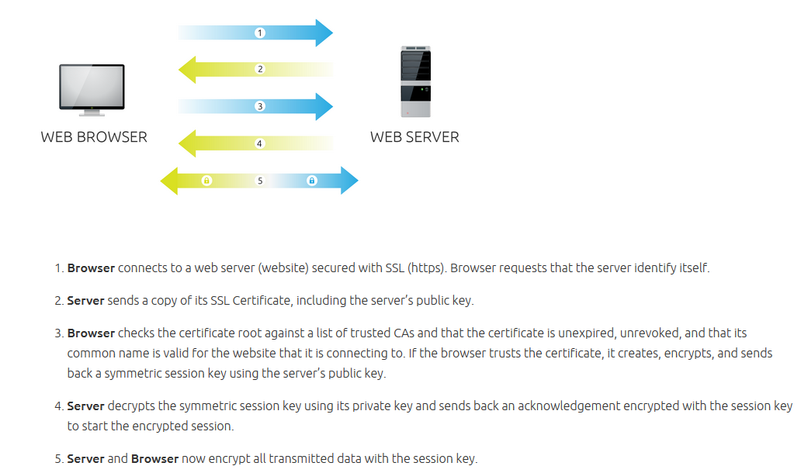
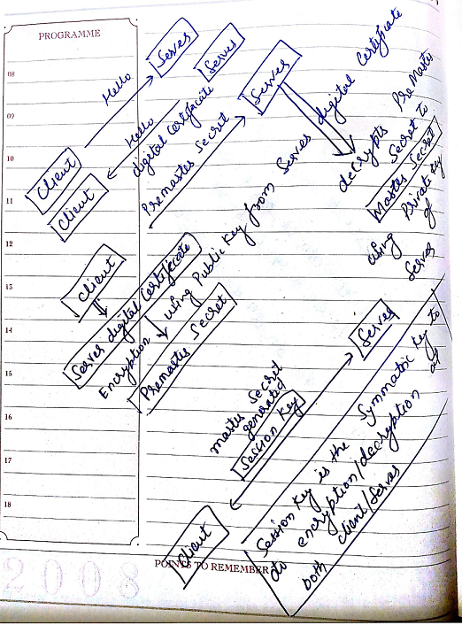

| wikipedia.org |
Public Key Cryptography (PKI)
|
| idiotechie.com | Transport Layer Security and Secure Socket Layer (TLS/SSL) TLS uses Hashing for Message Authentication Code (HMAC) algorithm SSL uses Message Authentication Code (MAC) algorithm HMAC is more secured than SSL MAC |
| pierobon.oeg symantec.com | SSL handshake   |
| wikipedia.org wikipedia.org |
Single Sign On (SSO)
|
| wikipedia.org | SAML 2.0 |
| wikipedia.org | Kerberos |
| sudhakar.online | How https works |
| dblock.org | Tomcat SSO using (Kerberos/NTLM) using Waffle |
| ioplex.com | Jespa NTLMv2 HTTP enterprise Single Sign-On (SSO) library |
| stackoverflow.com oracle.com | Diffrence between Service Provider(SP)/Identity Provider(IDP) initiated SSO |
| ca.com oracle.com coreblox.com stackoverflow.com stackoverflow.com | SiteMinder SSO reference Siteminder SSO + Spring Security + Angular JS |